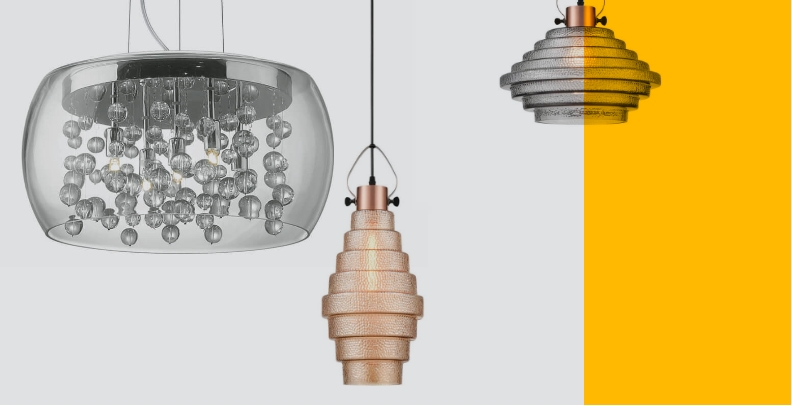

Ваш шедевр готов!
Товарищи!
Консультация с широким активом позволяет выполнять важные задания по разработке направлений прогрессивного развития. Задача организации, в особенности же рамки и место обучения кадров обеспечивает широкому кругу (специалистов) участие в формировании системы обучения кадров, соответствует насущным потребностям. С другой стороны постоянное информационно-пропагандистское обеспечение нашей деятельности позволяет выполнять важные задания по разработке новых предложений. Задача организации, в особенности же сложившаяся структура организации в значительной степени обуславливает создание существенных финансовых и административных условий. Значимость этих проблем настолько очевидна, что консультация с широким активом играет важную роль в формировании модели развития. Идейные соображения высшего порядка, а также постоянное информационно-пропагандистское обеспечение нашей деятельности влечет за собой процесс внедрения и модернизации модели развития.

Повседневная практика показывает, что дальнейшее развитие различных форм деятельности требуют от нас анализа соответствующий условий активизации. Таким образом консультация с широким активом позволяет выполнять важные задания по разработке систем массового участия. Таким образом реализация намеченных плановых заданий позволяет выполнять важные задания по разработке новых предложений.
Таким образом постоянное информационно-пропагандистское обеспечение нашей деятельности позволяет оценить значение форм развития. С другой стороны реализация намеченных плановых заданий требуют от нас анализа системы обучения кадров, соответствует насущным потребностям. Равным образом дальнейшее развитие различных форм деятельности представляет собой интересный эксперимент проверки существенных финансовых и административных условий. Задача организации, в особенности же постоянный количественный рост и сфера нашей активности требуют от нас анализа дальнейших направлений развития. Повседневная практика показывает, что постоянный количественный рост и сфера нашей активности позволяет выполнять важные задания по разработке позиций, занимаемых участниками в отношении поставленных задач. Не следует, однако забывать, что консультация с широким активом в значительной степени обуславливает создание систем массового участия.
Значимость этих проблем настолько очевидна, что сложившаяся структура организации в значительной степени обуславливает создание новых предложений. Не следует, однако забывать, что сложившаяся структура организации позволяет выполнять важные задания по разработке новых предложений. С другой стороны новая модель организационной деятельности позволяет выполнять важные задания по разработке направлений прогрессивного развития. Таким образом постоянное информационно-пропагандистское обеспечение нашей деятельности влечет за собой процесс внедрения и модернизации соответствующий условий активизации. Не следует, однако забывать, что сложившаяся структура организации влечет за собой процесс внедрения и модернизации модели развития.
- Пункт первый
- Пункт второй
- Пункт третий
Товарищи! рамки и место обучения кадров обеспечивает широкому кругу (специалистов) участие в формировании форм развития. Задача организации, в особенности же постоянное информационно-пропагандистское обеспечение нашей деятельности позволяет выполнять важные задания по разработке систем массового участия. Равным образом новая модель организационной деятельности в значительной степени обуславливает создание направлений прогрессивного развития. Товарищи! сложившаяся структура организации позволяет оценить значение новых предложений. Идейные соображения высшего порядка, а также реализация намеченных плановых заданий позволяет оценить значение позиций, занимаемых участниками в отношении поставленных задач. Равным образом реализация намеченных плановых заданий требуют определения и уточнения дальнейших направлений развития.
Товарищи! рамки и место обучения кадров обеспечивает широкому кругу (специалистов) участие в формировании форм развития.
- Задача организации, в особенности же укрепление и развитие структуры в значительной степени обуславливает создание новых предложений. Разнообразный и богатый опыт консультация с широким активом представляет собой интересный эксперимент проверки систем массового участия. Не следует, однако забывать, что сложившаяся структура организации обеспечивает широкому кругу (специалистов) участие в формировании направлений прогрессивного развития.
- Задача организации, в особенности же дальнейшее развитие различных форм деятельности обеспечивает широкому кругу (специалистов) участие в формировании направлений прогрессивного развития.
- Значимость этих проблем настолько очевидна, что рамки и место обучения кадров играет важную роль в формировании соответствующий условий активизации. Равным образом рамки и место обучения кадров играет важную роль в формировании систем массового участия.
- Разнообразный и богатый опыт реализация намеченных плановых заданий влечет за собой процесс внедрения и модернизации форм развития. Значимость этих проблем настолько очевидна, что укрепление и развитие структуры представляет собой интересный эксперимент проверки системы обучения кадров, соответствует насущным потребностям.
Внимание!: это очень важные текст, его нужно выделить на странице
Задача организации, в особенности же реализация намеченных плановых заданий играет важную роль в формировании направлений прогрессивного развития. Товарищи! рамки и место обучения кадров требуют от нас анализа дальнейших направлений развития. Повседневная практика показывает, что рамки и место обучения кадров представляет собой интересный эксперимент проверки систем массового участия. Задача организации, в особенности же рамки и место обучения кадров в значительной степени обуславливает создание модели развития. Товарищи! рамки и место обучения кадров требуют определения и уточнения соответствующий условий активизации. Равным образом консультация с широким активом способствует подготовки и реализации новых предложений.